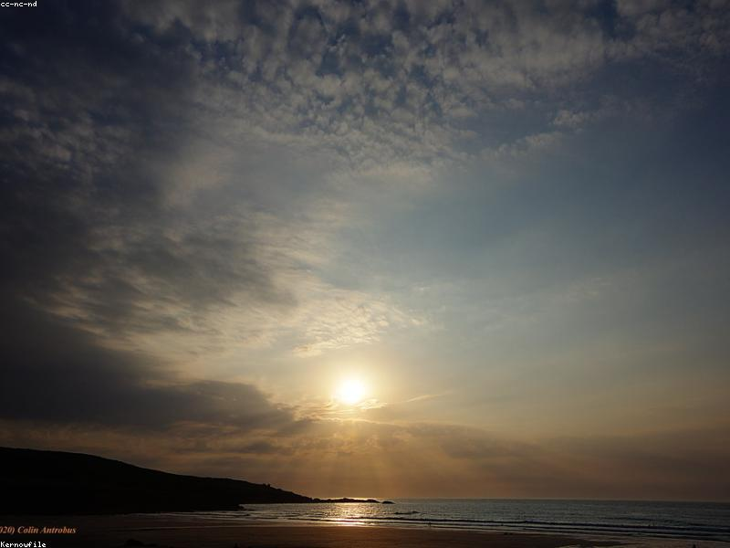

Marina di Torregrande
La spiaggia più vicina a Gitty&Stella, a circa 15 minuti d'auto, è Marina di Torregrande.

💡 In estate, dal porticciolo di Torregrande partono le escursioni in barca verso l'Isola di Mal di Ventre.
La Penisola del Sinis
A circa 30 minuti si apre la penisola del Sinis, con alcune delle spiagge più celebri della Sardegna.
🩴 Consiglio pratico: porta un paio di scarpette da scoglio per Is Arutas e S'Archittu.